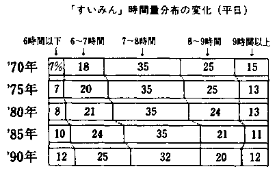

（1）
悩んで
問1 一人で悩んでいないで、だれかに相談したらどうですか。
問2 彼は絶対に約束を破らない人だ。
問3 その大会は、警備上の都合で延期された。
問4 この住宅は、光が部屋の奥まで届くようにつくられている。
問5 政府の調査によれば、台風による農産物の被害は数億円にのぼるという。
問6 この記事では、目立たないところで汗を流して働いている人々を取り上げている。
問1 かいさつぐちでは、じょうしゃけんをお渡しください。
問2 このロボットは、人間が入れないようなほそいくだの中に入って、ぶひんをこうかんすることができます。
問3 食料をほぞんするしゅだんとしては、塩につけたり、かんづめにしたり、かんそうさせたりする方法があります。
問4 けいざいのあんていしたはってんのためには、しゅうへんの国々のきょうりょくが必要である。
問5 このしんりんちたいには、めずらしいしょくぶつがはえています。
これは、フランスで実際にあった話である。パリのある下町に、たいへん欲（注1）の深い肉屋がいた。毎日の食事や衣服を節約したり、女房にまでケチでとおした肉屋は、たいへんな財産をたくわえているというのでも有名だった。
ある日、その肉屋に、12歳ぐらいの女の子が肉を買いにやってきた。500フランの代金を払うという時になると、その女の子は「しまった。お金を忘れてきちゃった。おじさん、あとでお金もってくるから、これちょっと預かって」といって、もっていたバイオリンをその肉屋にわたしていった。彼は、何気なく、そのバイオリンを店の隅のほうに置いておいた。
さて、それから30分くらいすると、一人の老紳士が、肉を買いにやってきた。1キログラムの牛肉を買い、代金を支払って店をでようとした時、その老紳士が、店の隅にたてかけてあるバイオリンを見た。それを手に取って、じっくり見てから、大声でいった。
「このバイオリンはすばらしい。ストラディバリウスという世界的な名器だ。50万フランで買いたい。ぜひゆずってくれませんか」と熱心に肉屋に頼むのだ。
だが、肉屋にしてみれば、自分のバイオリンではない。売るわけにはいかない。そこで、肉屋は、持ち主の女の子に話して自分が買い受けてからこの老紳士に売ろうと考え、「明日の9時にもう一度ここへ来てください。おゆずりしましょう」といって、その老紳士を帰した。
例の女の子は、すぐもどってきた。肉の代金を支払い、バイオリンを受け取って帰ろうとした。
「ねえ、そのバイオリン、おじさんに売ってくれないかね。あまりよいバイオリンじゃないけれど、うちの子もバイオリンをこれから始めるので一つ欲しいんだよ」
女の子が、しぶしぶ売ってもよいという返事をした時、肉屋は「しめた。女の子をだました」と内心大喜びである。彼は5万フランでそのバイオリンを彼女からゆずり受けることに、まんまと成功した。先ほどの紳士に、50万フランで売れば、45万フランの儲けだ。彼が喜んだのも当然だ。肉屋は、その女の子をだまして悪いと思ったのか、先ほどの肉の代金を返してやった。彼の良心が、子どもをだますことをよしとしなかったのであろう。
肉屋は、紳士のやってくるのを待った。だが、その老紳士は翌日の9時になってもやってこなかった。老紳士と女の子による計画的なサギ（注2）であったのである。
サギにあう人たちの中には、この肉屋のように、一攫千金を夢みる、けちな人、欲の深い人が多い。子どもをだまして、45万フラン儲けようという“欲”が、物事を冷静に見る目を失わせてしまったのである。
（浅野八郎「不思議な心理ゲーム①」青春出版社による）
（注1）欲：お金や物などを欲しがる気持ち。
（注2）サギ：人をだまして、物やお金を手に入れること。
肉屋についてこの文章からわかることは何か。
がとても好きである。
第1段落日本人の生活習慣も、時代とともに変わっていく。ほんの少し前までは、春や秋になると、タタミを乾燥させるために、家の中からタタミを外に出す光景があちこちで見られたものである。どんなにいそがしい生活をしている人でも、これだけは続けてきた。タタミは暮らしの中に季節感を作り出していたのである。
第2段落最近では、タタミがだんだん見られなくなってきている。タタミの上に座る、タタミの上で家族みんなで食卓をかこむ、タタミの上にふとんを敷いて眠る。客が来れば、そのタタミの上に手をついてあいさつする。それがあたりまえだった生活は、つい昨日のことである。タタミは日常の生活と共にあったのである。
第3段落タタミという言葉は、古い時代の文学や記録にも出ている。昔から日本人の生活の中にあったものと考えてよいのであろうが、そのころは、床に敷く布や毛布のようなものをタタミと呼んでいたらしい。そして、使わない時はたたんでしまっていた。〔 ④ 〕、「たたむ」ものだからタタミということばが生まれたのだろうと思われる。
第4段落また、昔の詩の中にこうある。「旅に出た人の使っていたタタミは動かしても汚してもならない」と。なぜなら、人は旅に出ている時でも故郷に自分の心を残しており、その心はタタミの上にも残っている。そのタタミを留守のあいだ大事にしないと、旅で危険な目にあったり、病気になったりする、と信じられていたからだ。昔は、タタミはひとりひとりが自分だけで使うものだったのである。
第5段落やがて時代は変わり、タタミはしだいに現在のような形と大きさのものになっていく。一人の人が寝られるぐらいの大きさがタタミ一枚の標準となり、それに合わせて部屋の大きさも決められるようになった。どんな部屋でも、「四畳半」とか「六畳」というように、タタミを組み合わせて敷くことができる大きさになったのである。また、タタミの素材も、湿気の多い日本に合うように工夫されていった。
第6段落最近ではすっかり目立たなくなったタタミも、長い歴史を持ち、日本の生活文化と深いつながりを持っているのである。
第4段落で筆者がいちばん言いたいことは次のどれか。
タタミは
（1）科学者と聞くと、ふつうの人ではとても考えられないような難しいことばかり研究している人だと思ってしまいます。もちろん、専門的な知識がなければ科学の研究はできないでしょう。しかし、科学の研究の出発点は、私たちがふだんあたりまえに思っていることがらについて、それがあたりまえかどうか考え直すことにあるのです。それができたら、その人は科学者になる第一歩を踏み出したと言えるかもしれません。
（2）午前3時に電話のベルが鳴った。眠い目をこすりながら電話に出ると、いきなり「いつまでピアノの練習をしているの。うるさくて、眠れないじゃない。」と女性のどなり声。朝の3時に、しかも名前を言わないのは失礼だと思ったが、相手の名前を聞いて、静かに電話を切った。
翌日の午前3時ちょうど、今度は私が電話をかけた。もちろん、こちらの名前を言ってから話し始めた。「私はピアノを持っていませんし、弾くこともできません。昨日のお電話、何かの間違いではありませんか。」
（3）新幹線のプラットホームの駅名表示は、その駅から乗る人やその駅で降りる人には必要ない。乗る人にはわかりきっていることだし、降りる人には車内でのアナウンスなりなんなりがあるからである。そうすると、通過する列車の乗客のためにしか役立たないものだが、それにしては新幹線のスピードが速すぎるのか、表示の字が小さすぎるのか、とても読めたものではない。つまり、何のために新幹線のプラットホームに駅名が書いてあるのだろうか。
（岡部冬彦「岡部冬彦の見る聞く話す」発明協会による）
加藤さんは、なぜびっくりしたのか。
が日本語が上手になったから。
（5）日本人の睡眠時間が少なくなっていることが、NHKの調査によってわかった。平日の睡眠時間が7時間以下の人は、’70年には〔 a 〕だったが’90年には〔 b 〕に増えている。一方、8時間以上の睡眠をとる人は〔 c 〕から〔 d 〕に減っている。

（NHK世論調査部編「図説 日本人の生活時間 1990」日本放送出版協会による）